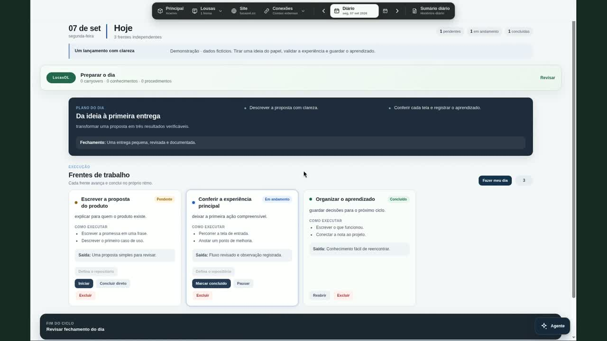
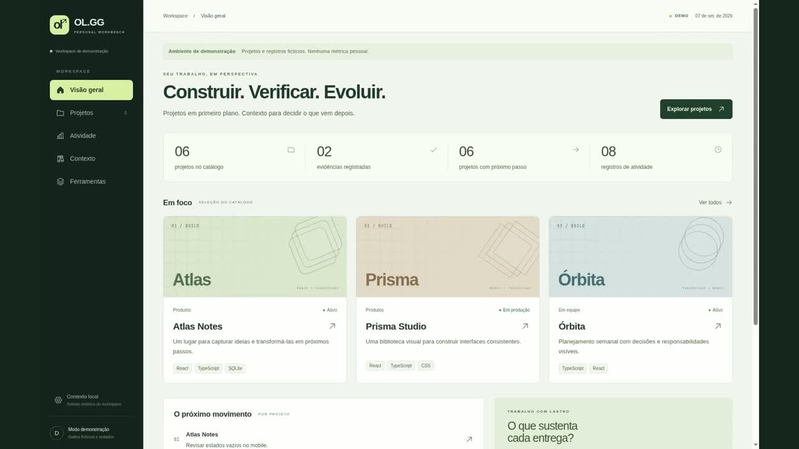
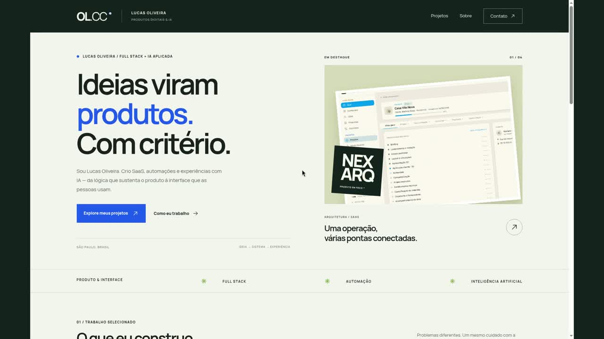

01 / OrganizarApp desktop
DailyWork
O dia ganha direção. Frentes, conhecimento e rascunhos em um espaço compartilhado entre você e seus agentes.
Conhecer o DailyWork
Planejar o dia. Entender a execução. Apresentar o que foi construído. Conheça os projetos que conectam essas etapas.
Explorar as demonstraçõesO dia ganha direção. Frentes, conhecimento e rascunhos em um espaço compartilhado entre você e seus agentes.
Conhecer o DailyWork

Projetos em primeiro plano. Atividade, evidências e contexto organizados para revisar o trabalho e encontrar o próximo passo.
Explorar o OL.GG
Uma porta de entrada para o que construo. Produtos, automações e experimentos, com contexto e imagens do trabalho real.
Conhecer o portfólioTrabalho em andamento, objetivos e critérios de pronto ficam juntos.
Projetos, registros e contexto ajudam a entender o que existe e o que precisa de atenção.
Uma seleção pública transforma trabalho em uma apresentação que pode ser explorada.